The Station floor plan, built
3 Oct 2026 · branch station/s11-floorplan-build-20261003 at 7c6e19d (S11b) · the real Station page (not a mock), in a hidden browser · not deployed
The X column takes 24% of the screen's width on every screen. X fills it from the top. The YouTube box sits at its foot, exactly as wide as the column, with a 16:9 picture. The charts take the other 76%, edge to edge, with no black anywhere.
| Screen | Grid · page measured | Charts, share of the screen | One chart | X column | YouTube picture | Black |
|---|---|---|---|---|---|---|
| MacBook 1680 × 1050 | 9 · three by three LIVE wall at 9 | 76.0% | 425 × 349 | 24.0% · 403 px posts 403 × 794 | 403 × 227 16:9 + its 28 px bar | 0 px |
| 6 · three by two OTHER INDEXES · DAY | 76.0% | 425 × 525 | 24.0% · 403 px posts 403 × 794 | 403 × 227 16:9 + its 28 px bar | 0 px | |
| 4 · two by two MACRO · 4H | 76.0% | 638 × 525 | 24.0% · 403 px posts 403 × 794 | 403 × 227 16:9 + its 28 px bar | 0 px | |
| Apple TV 1920 × 1080 | 9 · three by three LIVE wall at 9 | 76.0% | 485 × 359 | 24.0% · 461 px posts 461 × 792 | 461 × 259 16:9 + its 28 px bar | 0 px |
| 6 · three by two OTHER INDEXES · DAY | 76.0% | 485 × 540 | 24.0% · 461 px posts 461 × 792 | 461 × 259 16:9 + its 28 px bar | 0 px | |
| 4 · two by two MACRO · 4H | 76.0% | 729 × 540 | 24.0% · 461 px posts 461 × 792 | 461 × 259 16:9 + its 28 px bar | 0 px | |
| External 2560 × 1440 | 9 · three by three LIVE wall at 9 | 76.0% | 648 × 479 | 24.0% · 614 px posts 614 × 1066 | 614 × 345 16:9 + its 28 px bar | 0 px |
| 6 · three by two OTHER INDEXES · DAY | 76.0% | 648 × 720 | 24.0% · 614 px posts 614 × 1066 | 614 × 345 16:9 + its 28 px bar | 0 px | |
| 4 · two by two MACRO · 4H | 76.0% | 972 × 720 | 24.0% · 614 px posts 614 × 1066 | 614 × 345 16:9 + its 28 px bar | 0 px |
Every number is measured on the live page at the moment its picture was taken. "Charts" is everything to the right of the column (the charts and the thin lines between them) as a share of the whole screen. The same measurement is used on every row. "X column" is its share of the screen's width and its width in pixels; "posts" is the part X fills above the YouTube box. "Black" is every pixel that is not a pane or a 1-pixel seam, including any black bars around the YouTube picture.
9 charts
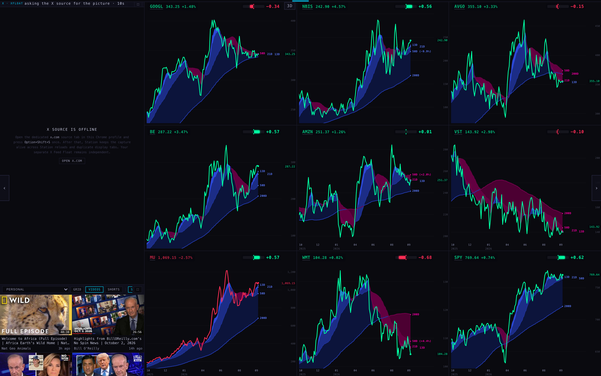
6 charts
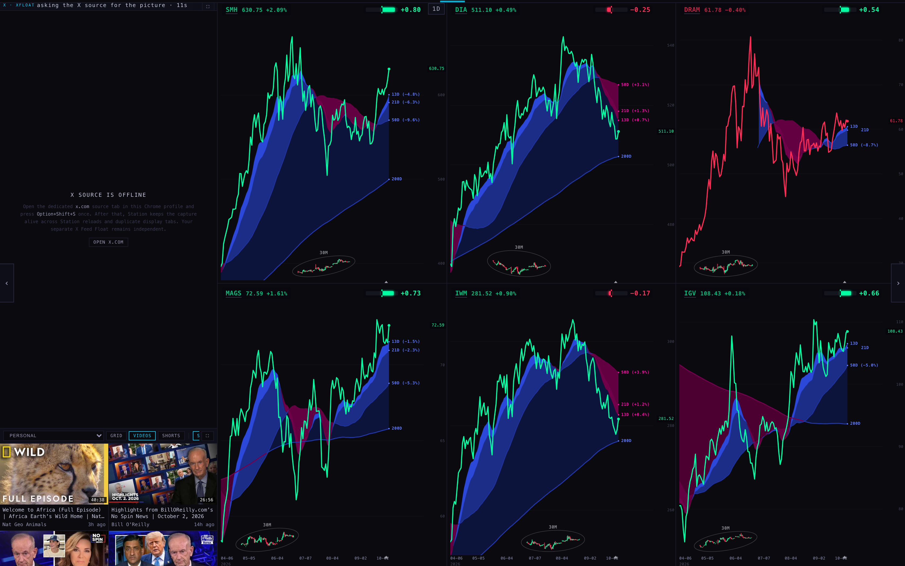
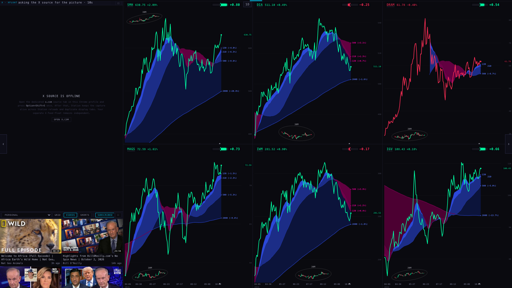
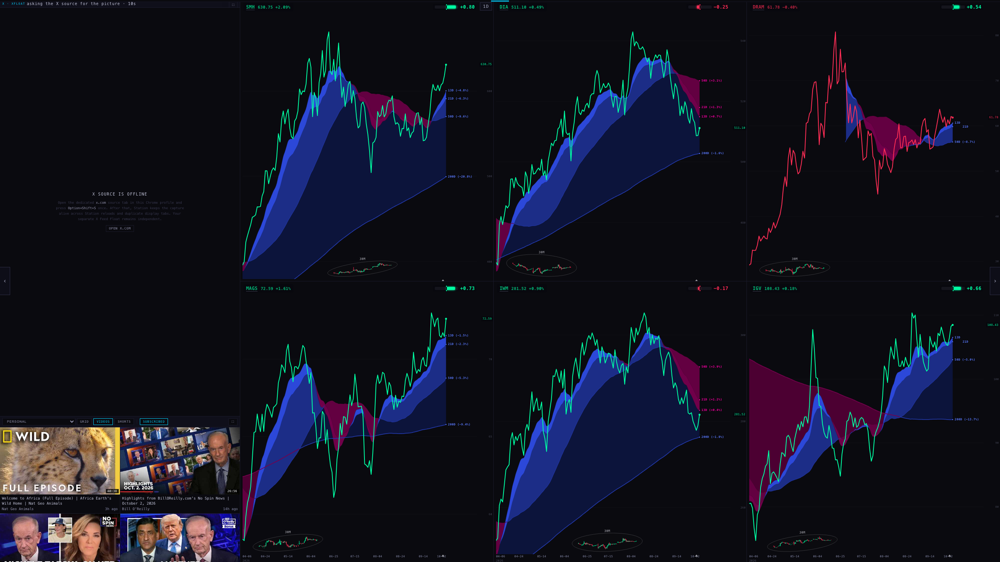
4 charts
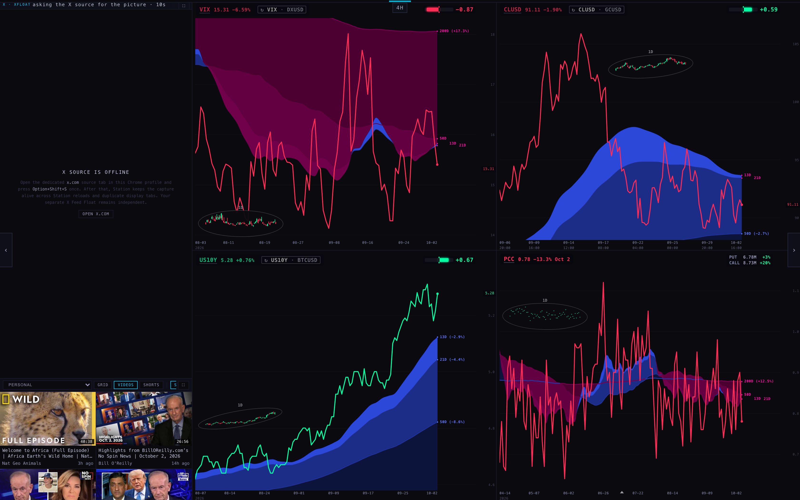
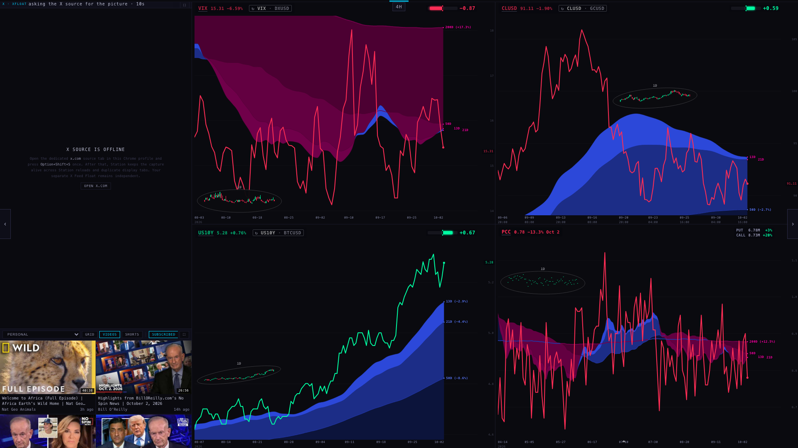
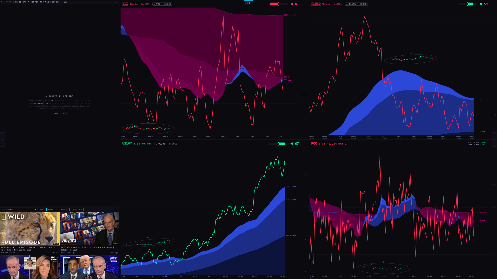
The corner: the foot of the X column and the YouTube box
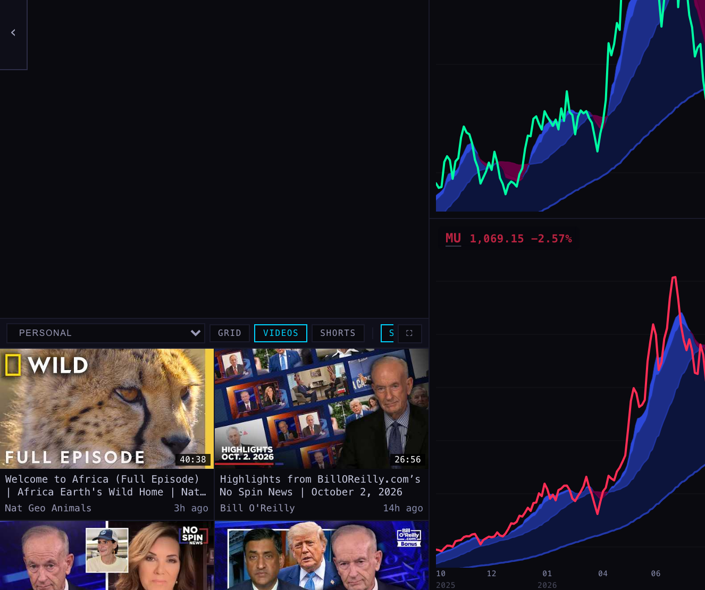
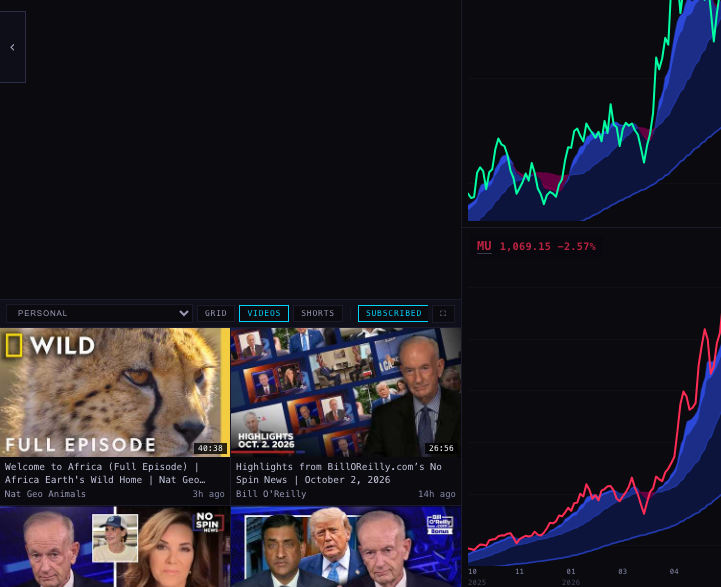
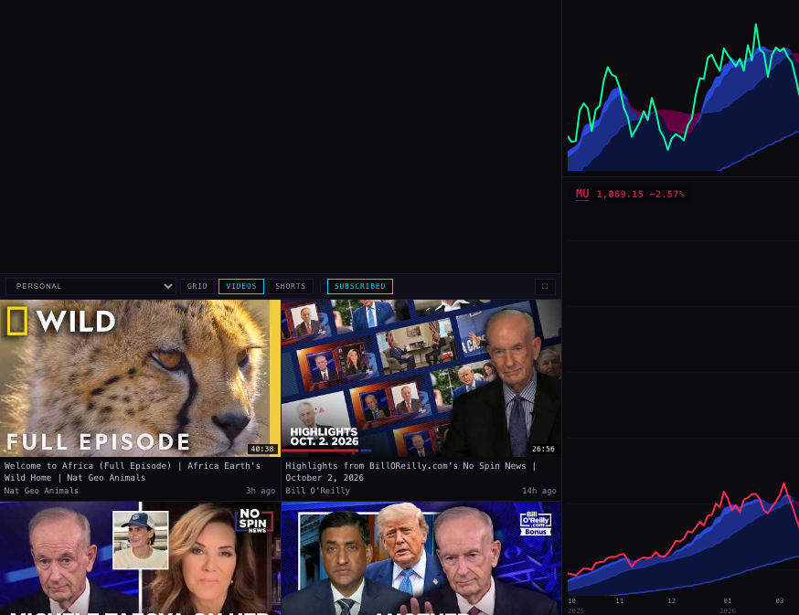
S11b · the video's expand, and the YouTube buttons
The video's expand is now one step: the theatre. Press ⛶ on the YouTube box and the playing video moves over the charts. It takes the largest 16:9 picture that fits the chart area (the 76% right of the column), centred. The charts are covered, not closed, and X gets the whole column, top to bottom. Press the same button (it now reads ↙ BACK), or Esc, and the video goes back to the foot of the column. No step makes the video bigger inside the column any more, so the column never shows black.
| Screen | YouTube at rest | Theatre picture | X in the theatre | Black in the picture | Black in the column | After BACK: charts · column · black |
|---|---|---|---|---|---|---|
| MacBook 1680 × 1050 | 403 × 227 at the column's foot | 1276 × 718 16:9 68% of the chart area · + its 28 px bar | 403 × 1050 the whole column | 0 px | 0 px | 76.0% · 24.0% · 0 px |
| Apple TV 1920 × 1080 | 461 × 259 at the column's foot | 1458 × 820 16:9 76% of the chart area · + its 28 px bar | 461 × 1080 the whole column | 0 px | 0 px | 76.0% · 24.0% · 0 px |
| External 2560 × 1440 | 614 × 345 at the column's foot | 1945 × 1094 16:9 76% of the chart area · + its 28 px bar | 614 × 1440 the whole column | 0 px | 0 px | 76.0% · 24.0% · 0 px |
Measured on the real page with a video playing, after a click on the box's own ⛶ button. BACK was checked three ways on every screen: the button, Esc while the video's controls had the focus, and Esc on the Station itself. Each one went back to the column. After BACK, the S11 numbers came back exactly: 76% charts, 24% column, a 16:9 picture and 0 px black. On the phone (unchanged), the old two steps stay: the video grows in the scrolling column, then covers X.
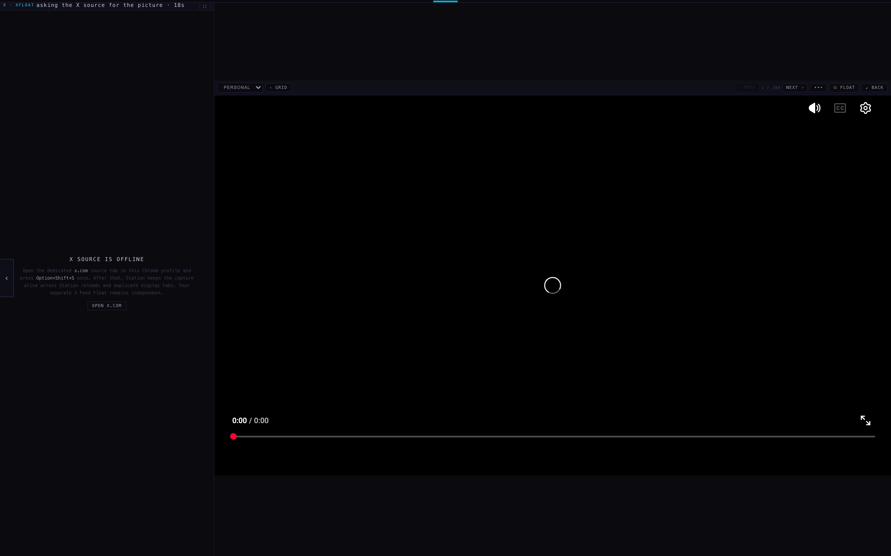
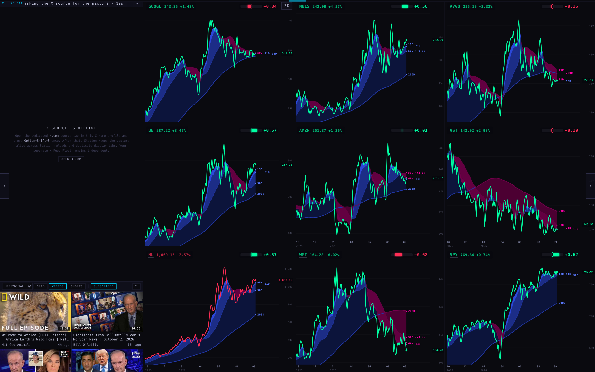
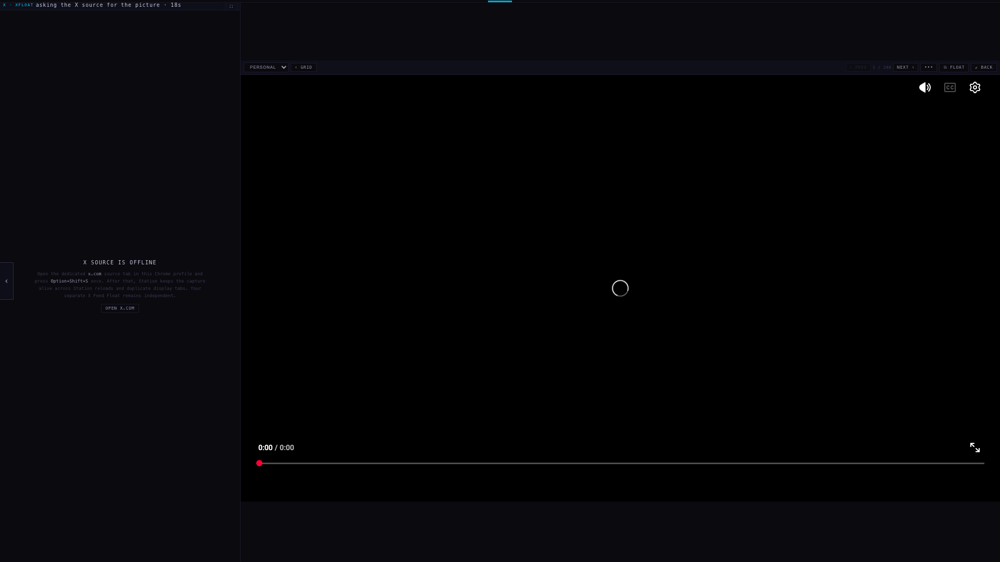
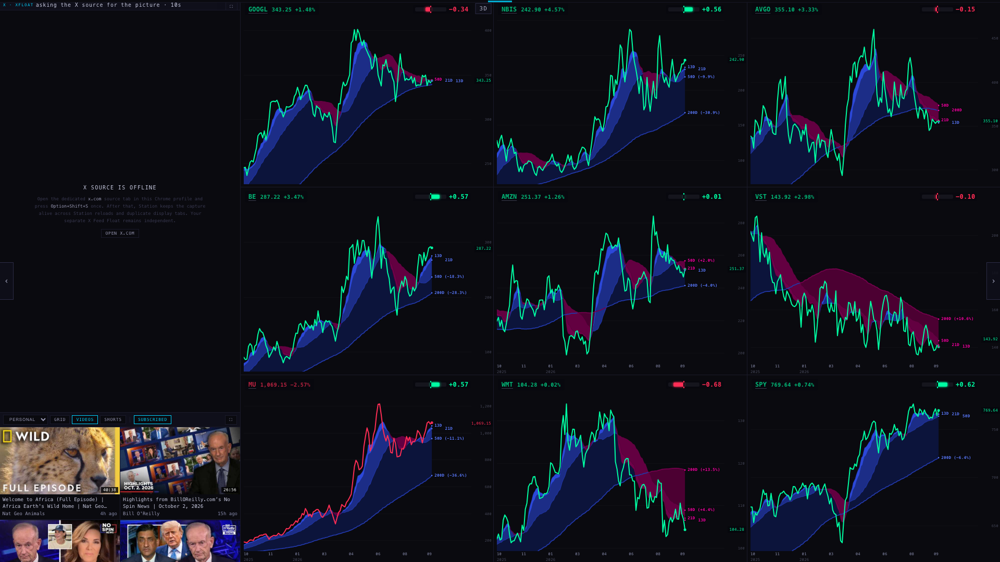
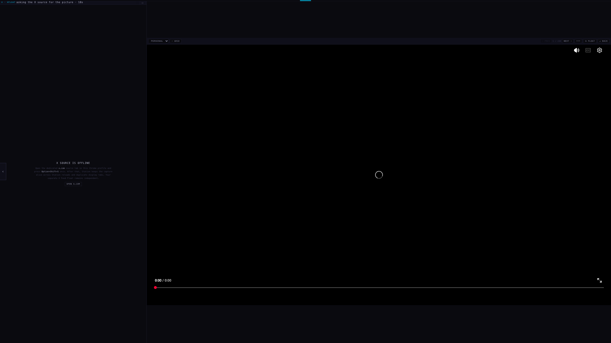
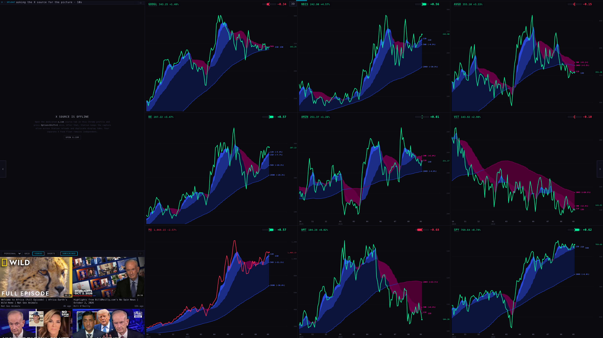
The YouTube buttons fit the column. The PERSONAL ▾ list was as wide as its longest choice. On the MacBook it took 187 of the 403 px and pushed SUBSCRIBED off the right edge. The list is now only as wide as the name it shows (86 px for PERSONAL). If the buttons still do not fit, they move closer together: same size of type, same colours. SCINTILLA has a longer row (ALL · SUBSCRIBED · WATCH LATER) and needs that on the MacBook and the Apple TV. Only if even that is not enough does the row scroll, with a fade at its edge.
| Screen | Feed | The row, left to right | How it fits | Cut | Lines |
|---|---|---|---|---|---|
| MacBook 403 px | PERSONAL | PERSONAL · GRID · VIDEOS · SHORTS · SUBSCRIBED · ⛶ | fits as drawn | nothing | one line |
| MacBook 403 px | SCINTILLA | SCINTILLA · GRID · VIDEOS · SHORTS · ALL · SUBSCRIBED · WATCH LATER · ⛶ | fits, compact chips | nothing | one line |
| Apple TV 461 px | PERSONAL | PERSONAL · GRID · VIDEOS · SHORTS · SUBSCRIBED · ⛶ | fits as drawn | nothing | one line |
| Apple TV 461 px | SCINTILLA | SCINTILLA · GRID · VIDEOS · SHORTS · ALL · SUBSCRIBED · WATCH LATER · ⛶ | fits, compact chips | nothing | one line |
| External 614 px | PERSONAL | PERSONAL · GRID · VIDEOS · SHORTS · SUBSCRIBED · ⛶ | fits as drawn | nothing | one line |
| External 614 px | SCINTILLA | SCINTILLA · GRID · VIDEOS · SHORTS · ALL · SUBSCRIBED · WATCH LATER · ⛶ | fits as drawn | nothing | one line |
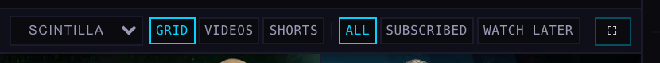
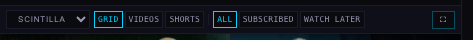
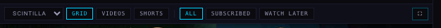
Not shown: the hidden test browser cannot decode YouTube video, so the theatre pictures show YouTube's own player (its controls and a loading ring) rather than a moving picture. The size and position of the box are measured, not drawn. On the Station the video plays in exactly that box.
Notes
- What changed: only the floor plan. The 19 pages, their order, and every page's charts and slots are as they were. Checked in the hidden browser: charts only (the column steps aside, the charts take the whole screen), a chart on its own, X on its own, the video's expand (S11b: now one step, the theatre, above), turning to the next page, and the phone (still one scrolling column).
- The nine-chart wall is new: a ninth slot was added, and 9 now sits next to 2 / 6 / 8 on the chart-count choice. No named page holds nine names today, so the 9 row was measured on the LIVE wall set to nine. The 6 and 4 rows are real pages.
- Pages with eight charts (TARGETS, MAG 7, the AI pages and most of the rotation) use the same rule: four by two, 318 × 525 each on the MacBook, with no black.
- Not shown: X cannot be captured in a hidden browser, so its column says "X source is offline" in these pictures. On the Station it shows the live feed in exactly that box. Nothing here was deployed.